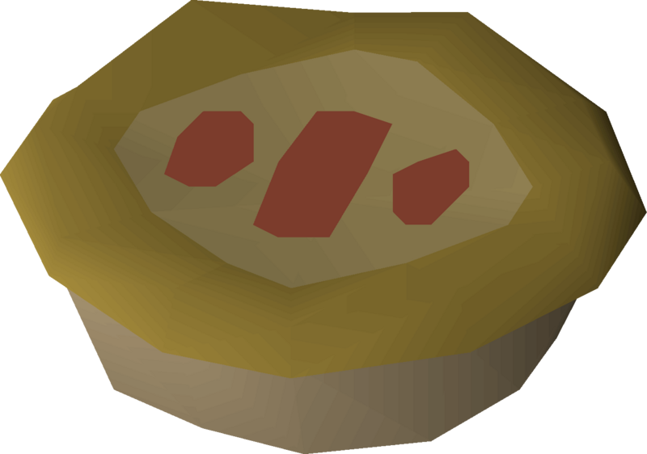

Summer Pie

A tasty summer pie from Old School Runescape. This item of food heals your player character for 22 hitpoints in two bites and requires 95 cooking. A summer pie will boost the player's Agility level by +5 temporarily as well as restoring 10% run energy.
This item of food requires the following ingredients:
- Cooking Apple
- Watermelon
- Strawberry
- Pot of Flour
- Bucket of Water
The following items are also required:
A summer pie can be made by following these steps:
- Combine a pot of flour with a bucket of water to obtain pastry dough.
- Combine pastry dough with the pie dish to create a pie shell.
- Use a strawberry on the pie shell to make a part summer pie (strawberry).
- Use a watermelon on the part summer pie (strawberry) to make a part summer pie (watermelon).
- Use a cooking apple on the part summer pie (watermelon) to make a raw summer pie.
- Cook the raw summer pie on a range to finish a summer pie.
Home